── Attaching core tidyverse packages ──────────────────────── tidyverse 2.0.0 ──
✔ dplyr 1.1.4 ✔ readr 2.1.5
✔ forcats 1.0.0 ✔ stringr 1.6.0
✔ ggplot2 4.0.0 ✔ tibble 3.3.0
✔ lubridate 1.9.3 ✔ tidyr 1.3.1
✔ purrr 1.1.0
── Conflicts ────────────────────────────────────────── tidyverse_conflicts() ──
✖ dplyr::filter() masks stats::filter()
✖ dplyr::lag() masks stats::lag()
ℹ Use the conflicted package (<http://conflicted.r-lib.org/>) to force all conflicts to become errors
Rows: 8865 Columns: 22
── Column specification ────────────────────────────────────────────────────────
Delimiter: ","
chr (15): Date.and.Time.of.initial.call, Date.and.time.of.Ranger.response, B...
dbl (3): Duration.of.Response, X..of.Animals, Hours.spent.monitoring
lgl (4): PEP.Response, Animal.Monitored, Police.Response, ESU.Response
ℹ Use `spec()` to retrieve the full column specification for this data.
ℹ Specify the column types or set `show_col_types = FALSE` to quiet this message.Visualizing Data
SDS 192: Introduction to Data Science
For Today
- Perusall quiz debriefing
- What is a data visualization?
- Taxonomy of Data Visualizations
- Visualization Conventions and Critiques
- Work on Problem Solving Lab in Class
What is data visualization?
- the translation of information into a graphical format
- helps analysts summarize and identify patterns across large datasets
- always involves critical judgment calls on the part of the designer
Elements of data graphics
- visual cues/aesthetics
- color
- scale
- context
Framework drawn from: Yau, Nathan. 2013. Data Points: Visualization That Means Something. 1st edition. Indianapolis, IN: Wiley.
Visual Cues
- Where is the data positioned on the plot?
- What is the length of shapes on the plot?
- How large is the angle between vectors?
- What shapes/symbols appear on the plot?
- How much area do shapes take up on a plot?
- How intense is the color presented on the plot?
What variables mapped onto what visual cues?
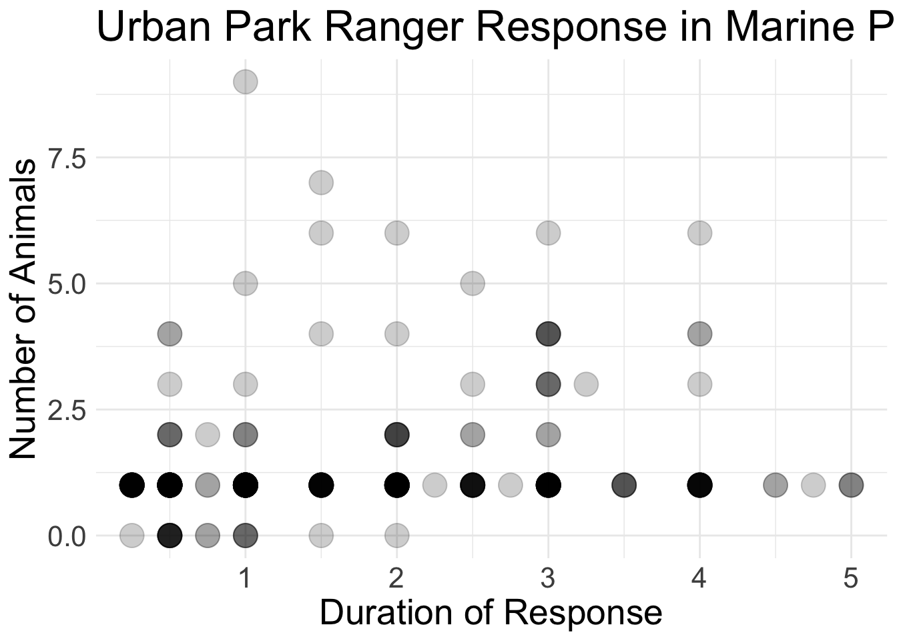
What variables mapped onto what visual cues?
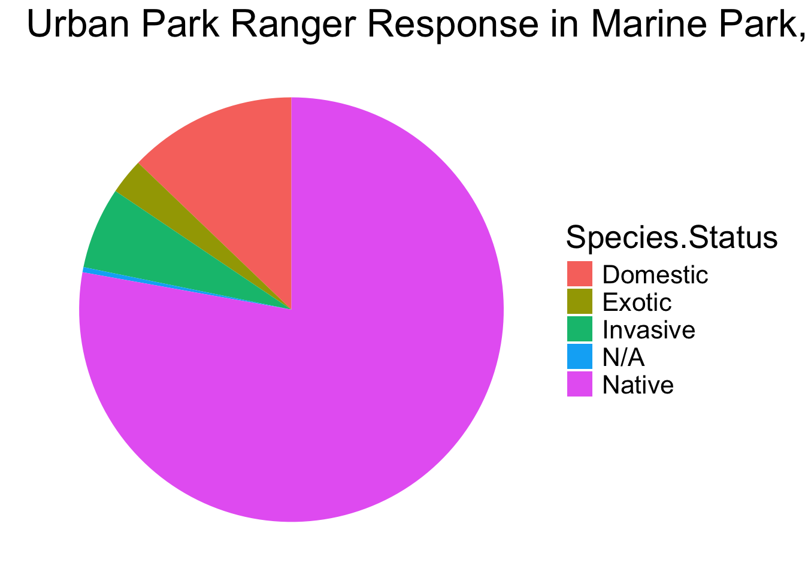
** This is the last time you will see me use a pie chart in this class!
What variables mapped onto what visual cues?
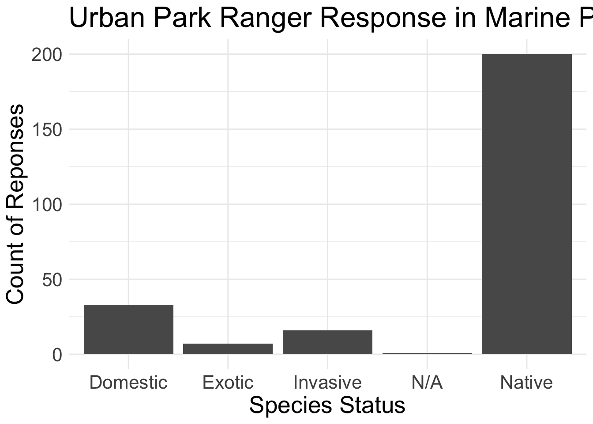
What variables mapped onto what visual cues?
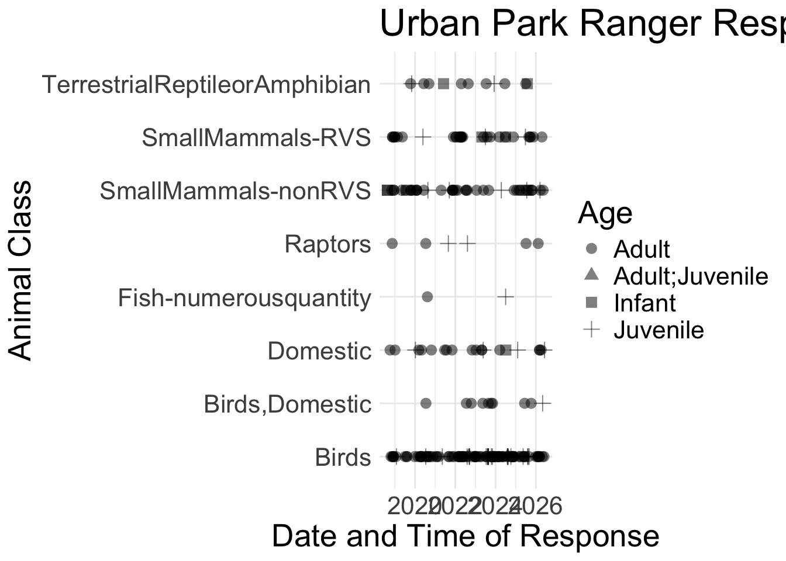
What variables mapped onto what visual cues?
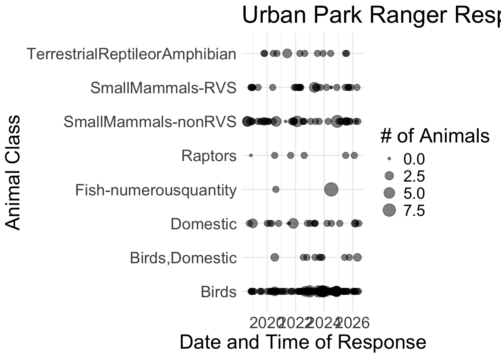
What variables mapped onto what visual cues?
`summarise()` has grouped output by 'Year'. You can override using the
`.groups` argument.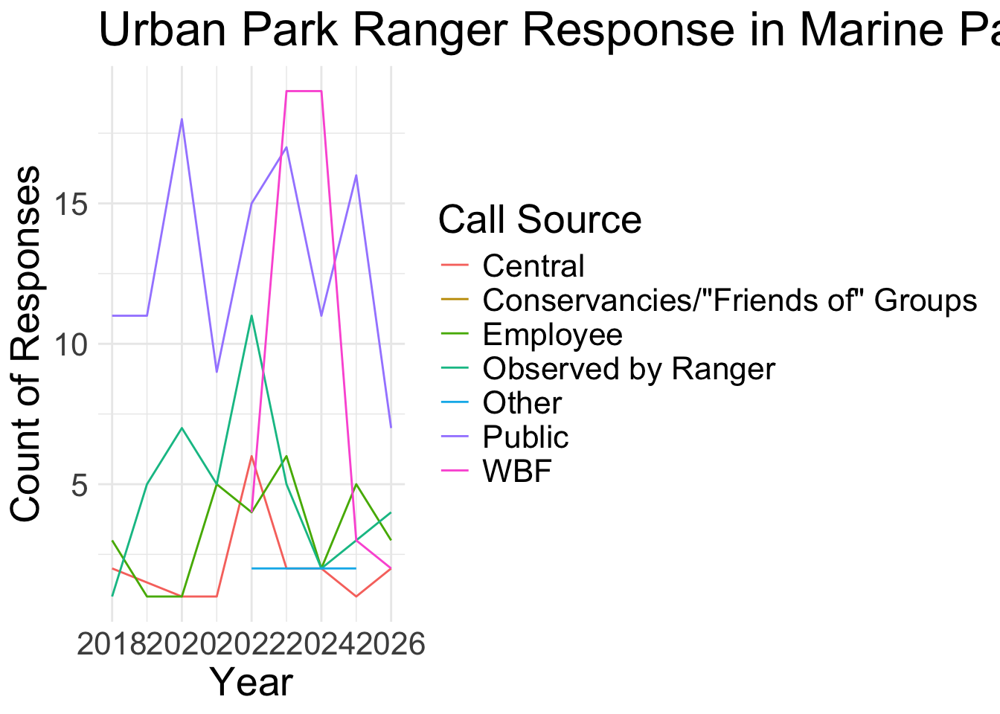
Color
- Qualitative: Distinct colors used to bucket categorical data
- Sequential: Gradient of color used to represent a uni-directional range of quantitative values
- Divergent: Gradations of color from a neutral center used to represent a bi-directional range of quantitative values
Accessible Color Palettes
display.brewer.all(colorblindFriendly = TRUE)
Scale
- Linear: Numeric values are evenly spaced on axis.
- Logarithmic: Numeric interval are spaced by a factor of the base of the logarithm.
- Categorical: Categorical values are discretely placed on axis.
- Ordinal: Categorical values are ordered on axis.
- Percent: Percentages of a whole are evenly spaced on axis.
- Time: Date/time values are placed on axis in years, months, days, hours, etc.
Examples
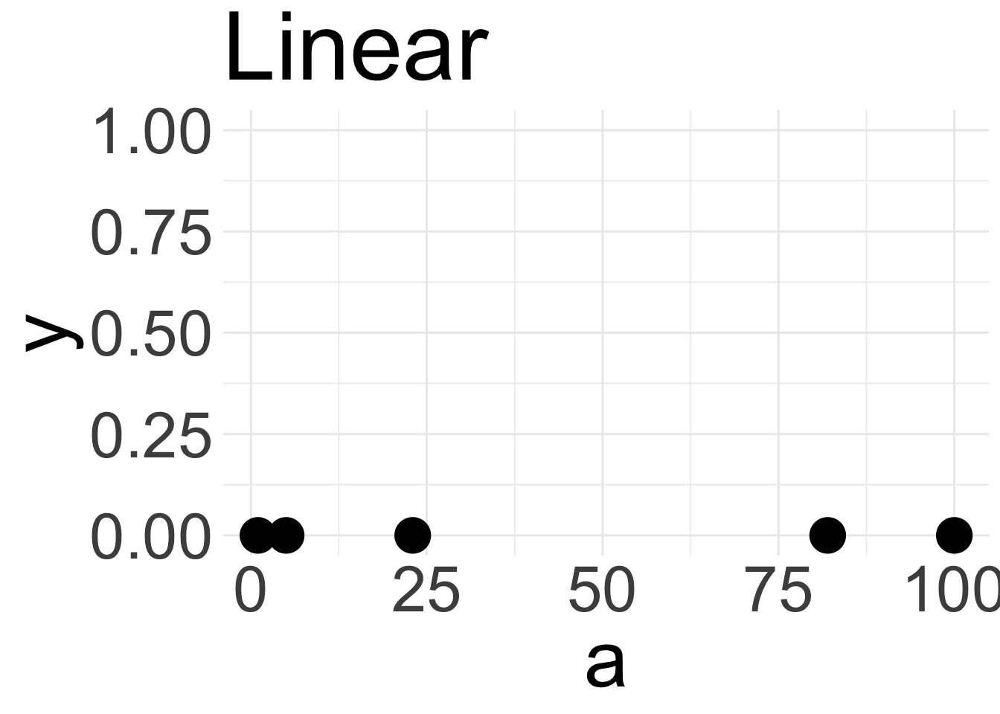
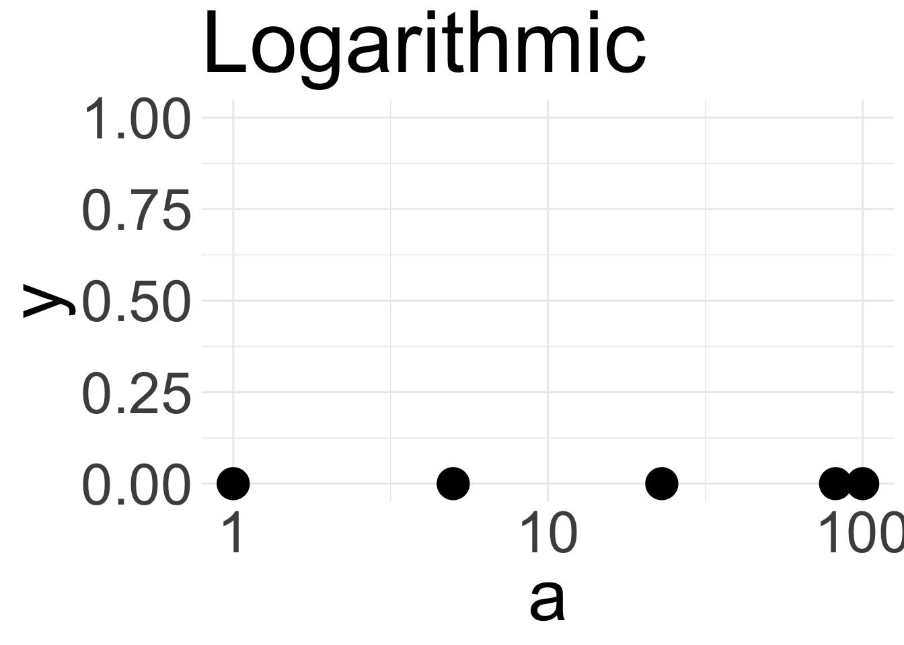
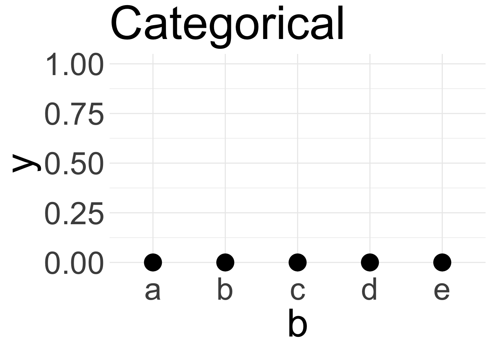
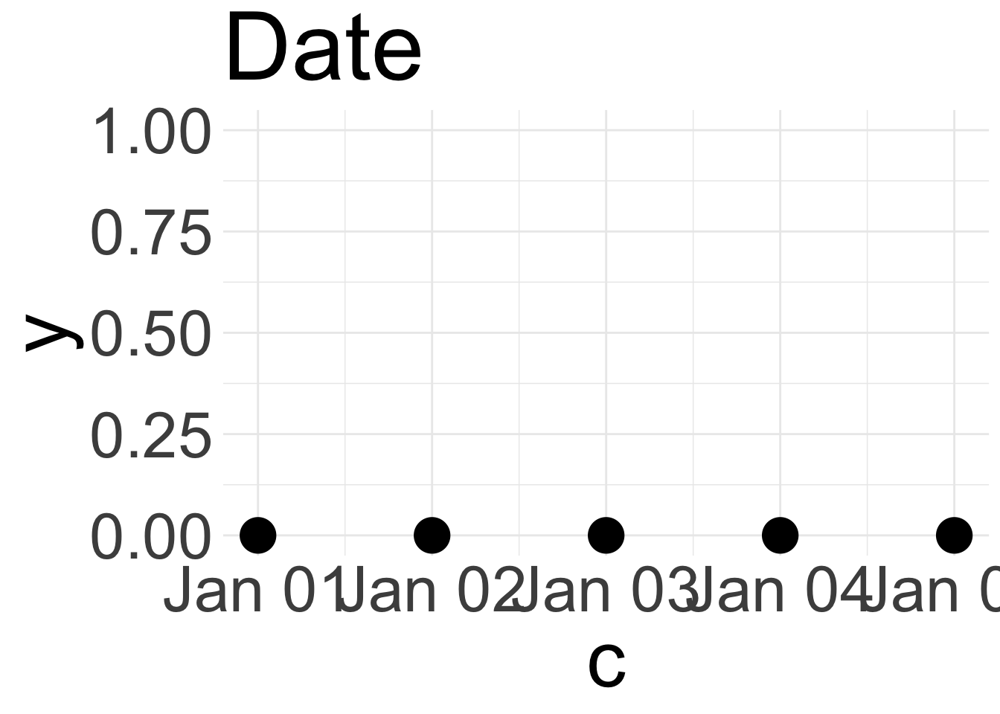
Context
In every plot you submit for this class, I will be looking for five pieces of context.
- The data’s unit of observation
- Variables represented on the plot
- Filters applied to the data
- Geographic context of the data
- Temporal (date/time range) context of the date
Context
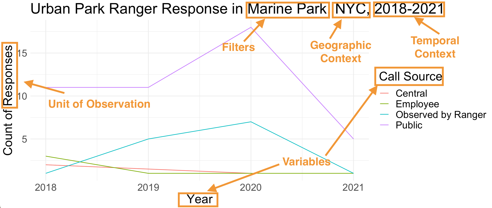
Data Visualization Conventions
- Edward Tufte, American statistician sometimes considered “father of data visualization”
- Introduced the concept of “graphical integrity”
- How do we present data as honestly as possible?
Lie Factor
- Lie Factor = (size of effect in graphic)/(size of effect in data)
- Lie factor is greater when variations on a graph fail to match variations in data

5.3-0.6 / 0.6 * 100= 783 (graph)
27.5-18 /18 *100 = 53 (data)
783/53 = 14.8
Inconsistent Scales

Presenting Data out of Context

Disproportionate Data-to-Ink Ratio
- Ensure that the ink used on the data match the amount of data presented
- Data-to-ink ratio = (ink used to represent data)/(ink used to print graphic)
- Should be as close as possible to 1
- Another way to think about it: How much of this graph could I erase without losing data?
Disproportionate Data-to-Ink Ratio
Warning: The `size` argument of `element_rect()` is deprecated as of ggplot2 3.4.0.
ℹ Please use the `linewidth` argument instead.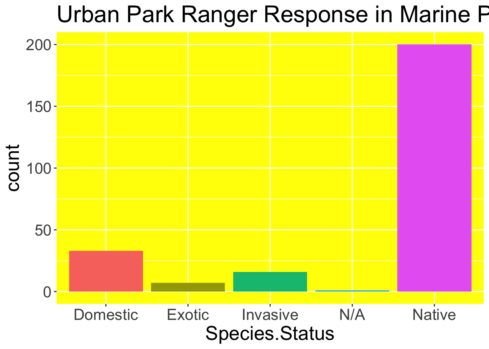
Deviating from Norms